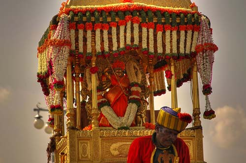

AMBARI
The Mysore Ambari, also known as the Golden Howdah, is a 750 kg golden elephant seat that symbolizes the rich heritage of Mysore. It is the main attraction of the Mysore Dasara festival.
The Wodeyar dynasty commissioned the Ambari in 1917. The Ambari is a wooden structure covered with gold sheets and precious stones. The Ambari has two wide seats in rows, bigger than the interiors of a family car. The Ambari is carried by the leading elephant during the Jamboo Savari (Elephant Procession) of the Mysore Dasara......
ARCHITECTURE
Mysore Palace in Karnataka is a masterpiece of Indo-Saracenic architecture. It is known for its intricate details, grand exteriors, and opulent interiors.

The palace is a three-story structure with square towers at each cardinal point It features a variety of arches, canopies, bay windows, and columns The palace incorporates many styles, including Hindu, Muslim, Rajput, and Gothic........
INTERIOR DESIGN
Mysore Palace in Karnataka is a masterpiece of Indo-Saracenic architecture. It is known for its intricate details, grand exteriors, and opulent interiors.

Durbar Hall: Also known as the Diwan-e-Khas, this hall has a ceiling with ornate designs, sculpted pillars, and stained glass windows Kalyana Mantapa: The wedding hall has a domed ceiling with stained glass and intricate gold motifs Ambavilas Hall: This hall has a golden throne, stained glass windows, and fine carvings Private Durbar Hall: This hall has murals and paintings that depict the life of the royal family Royal suites: These suites have period furniture, large mirrors, and luxurious carpets.......